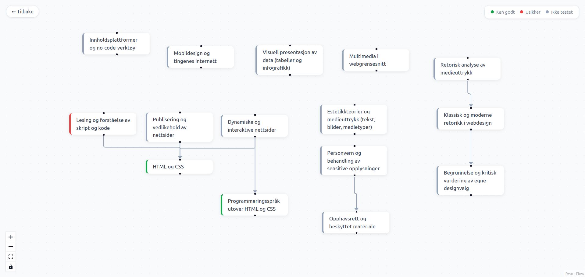

Om megAbout me
Hei, jeg er Fredrik. Jeg liker å bygge ting og forstå dem helt fra bunnen, og hvordan folk faktisk bruker dem. Veien hit har gått via kognitiv vitenskap, som ga meg et nytt syn på mennesker: hvordan vi tenker, hvordan vi ser på et problem, og hvorfor vi gjør som vi gjør. Det tar jeg med meg inn i alt jeg lager. Et system som jobber mot hvordan mennesker faktisk fungerer, er et dårlig system.
Hi, I'm Fredrik. I like building things and understanding them from the ground up, and how people actually use them. My path here went through cognitive science, which gave me a new view of people: how we think, how we look at a problem, and why we do what we do. I bring that into everything I make. A system that works against how people actually function is a bad system.
Utenom koding leser jeg, ser litt film og skriver ned tankene mine. Her kan du lese dem: Bøker og Filmer.
Outside of coding I read, watch some films and write down my thoughts. You can read them here: Books and Films.
Hva jeg holder på med nåWhat I'm doing now
Sist oppdatert
Last updated
Jeg tar master i programvareutvikling ved UiB og HVL. Akkurat nå bygger jeg et læringssystem fra bunnen av, med Java, REST, Postgres og RabbitMQ, og lærer i praksis hvordan alle delene må henge sammen.
I'm doing a master's in software development at UiB and HVL. Right now I'm building a learning system from scratch, with Java, REST, Postgres and RabbitMQ, and learning first-hand how all the parts have to fit together.
I helseinformatikk ser jeg på alt som omgir selve koden: regulering, standarder, brukere, tid og penger. Der skriver jeg også en oppgave om hvordan mennesker og AI kan samarbeide om å lese mammografibilder (brystkreft). Det gjør det tydelig at et system handler like mye om menneskene som bruker det som om teknologien.
In health informatics I'm looking at everything that surrounds the code itself: regulation, standards, users, time and money. There I'm also writing a paper on how humans and AI can work together to read mammograms (breast cancer). It makes it clear that a system is as much about the people who use it as about the technology.
I tillegg jobber jeg med algoritmer, og der holder det ikke at en løsning virker. Jeg vil også vite hva den koster.
In addition I'm working on algorithms, and there it isn't enough that a solution works. I also want to know what it costs.
Resten Ringer 2 PågåendeIn progress
PythonPygame
Selv om jeg lærte mye på studiet, ville jeg prøve meg på egenhånd. Resten Ringer 2 er oppfølgeren til et spill en venninne og jeg lagde sammen på studiet, men denne gangen bygger jeg det selv, inspirert av Enter the Gungeon og The Binding of Isaac.
Even though I learned a lot at university, I wanted to try something on my own. Resten Ringer 2 is the sequel to a game a friend and I made together at university, but this time I'm building it myself, inspired by Enter the Gungeon and The Binding of Isaac.
Det morsomste er å få fiender til å oppføre seg smart. Foreløpig har jeg fire atferder: gå mot spilleren, gå mot spilleren og stoppe opp for å slå, hoppe mot spilleren fra avstand, og skyte. Den som skyter må først finne en skytebane. Den går med A* til den har fri sikt, som sjekkes med Bresenhams linjealgoritme, og skyter så mot midten av spilleren. Hver ny idé starter med det samme spørsmålet: «Det hadde vært kult, men hvordan skal jeg implementere det?» Koden ligger åpen på GitHub.
The most fun part is getting enemies to behave intelligently. So far I have four behaviours: walk towards the player, walk towards the player and stop to strike, leap at the player from a distance, and shoot. The one that shoots first has to find a firing line. It moves using A* until it has a clear line of sight, which is checked with Bresenham's line algorithm, and then fires at the centre of the player. Every new idea starts with the same question: "That would be cool, but how am I going to implement it?" The code is open on GitHub.

StudieKart
ReactFastAPIPostgreSQLDockerClaude Code
StudieKart er en webapp som hjelper studenter å se hva de kan og ikke kan i et emne. Jeg bygde den fordi jeg ville teste agentisk koding, og fordi jeg ville ha noe jeg selv kunne bruke: en oversikt over kunnskapen min og hva jeg bør jobbe med videre.
StudieKart is a web app that helps students see what they know and don't know in a course. I built it because I wanted to try agentic coding, and because I wanted something I could use myself: an overview of my own knowledge and what I should work on next.
Man forteller hvilket emne man vil teste og laster opp pensum, så lager Claude adaptive tester ut fra det. Man får også se en kunnskapsgraf som viser hvordan temaene henger sammen. Testene bruker spaced repetition slik at man holder kunnskapen ved like. Det er både flervalg og fritekst, og Claude vurderer fritekstsvarene.
You tell it which course you want to be tested on and upload the syllabus, and Claude creates adaptive tests from it. You also get a knowledge graph that shows how the topics connect. The tests use spaced repetition so you keep the knowledge fresh. There are both multiple-choice and free-text questions, and Claude grades the free-text answers.
Å bruke agentisk utvikling er å løfte programmeringsspråket opp til norsk, men du må fortsatt kunne forklare hva du vil oppnå og hvordan. En god prompt har en retning og en konkret idé til implementasjon. Språkmodeller er ikke perfekte, og dårlig implementasjon kan koste, så man må være kritisk.
Agentic development lifts the programming language up to plain English, but you still have to be able to explain what you want to achieve and how. A good prompt has a direction and a concrete idea for the implementation. Language models aren't perfect, and a poor implementation can be costly, so you have to stay critical.
Prøv den live (kan bruke et minutt på å våkne) · Kildekode · Alle prosjekter
Try it live (may take a minute to wake up) · Source code · All projects
Kunst og kulturArt and culture
Jeg bruker bøker og film til å stille spørsmål, både om samfunnet og om meg selv. På den måten utforsker jeg hva jeg selv mener, litt som Sokrates før han ble henrettet. I «Meditations» av Marcus Aurelius var det spesielt ett spørsmål jeg ble igjen sittende med: er målene mine noe jeg faktisk vil, eller noe andre vil for meg?
I use books and film to ask questions, both about society and about myself. That's how I work out what I actually think, a bit like Socrates before he was executed. In "Meditations" by Marcus Aurelius there was one question in particular that stayed with me: are my goals something I actually want, or something others want for me?
Spørsmål uten noen klar fasit liker jeg best. «Consider the Lobster» av David Foster Wallace, en annen bok jeg liker veldig godt, er en samling av essayer uten noen felles tråd bortsett fra at alle vil utforske, spørre og kanskje finne svar. Det er sånn jeg selv prøver å leve.
Questions without a clear answer are the ones I like best. "Consider the Lobster" by David Foster Wallace, another book I like a lot, is a collection of essays with no common thread except that they all want to explore, ask and maybe find answers. That's how I try to live myself.
Bildet er Duchamps «Fountain» på Tate Modern, et pissoar som ble stilt ut i et galleri. Er det kunst, hvorfor? Hvorfor ikke? Det minner meg om noe jeg tenkte på mens jeg så The Brutalist: folk kaller brutalisme stygt og avskriver det som arkitektur. Men mister vi ikke da noe som kan ligge dypere? Noe som kan reflektere noe mer enn bare skjønnhet?
The picture is Duchamp's "Fountain" at Tate Modern, a urinal that was exhibited in a gallery. Is it art? Why? Why not? It reminds me of something I was thinking about while watching The Brutalist: people call brutalism ugly and dismiss it as architecture. But don't we lose something that might run deeper? Something that can reflect more than just beauty?


MotstandHardship
Planen min var å gå rett fra videregående til studier. Jeg hadde allerede fått studieplass, så jeg ble ganske overrasket da jeg på sesjon fikk beskjed om at jeg skulle inn i militæret. Jeg endte opp som vaktsoldat, og er nå veldig takknemlig for tiden min der. Jeg lærte å leve tett på andre og løse oppgaver som et lag, og det er derfor jeg ikke er redd for å ta initiativ når jeg jobber sammen med andre i dag.
My plan was to go straight from upper secondary school to university. I had already been accepted, so I was pretty surprised when I was told at the military assessment that I'd be doing my service. I ended up as a guard soldier, and I'm now very grateful for my time there. I learned to live in close quarters with others and to solve tasks as a team, and that's why I'm not afraid to take the initiative when I work with others today.
Jeg lærte også å takle motstand, og å like det. Å stå opp før solen og tre ned i feltstøvler som er gjennomfrosne og stive av en iskald natt. Å være femten timer inn i en marsj uten å ha spist, og vite at man bare er halvveis. I de øyeblikkene hvor det føles som at man er i etasjen under kjelleren. Da er det ikke noe annet å gjøre enn å ta ett skritt av gangen til man er i mål. Den samme tankegangen tar jeg med meg inn i vanskelige kodeoppgaver eller systemer: jeg mister ikke motivasjonen av at noe er tungt.
I also learned to handle hardship, and to like it. Getting up before the sun and stepping into field boots that are frozen through and stiff after an ice-cold night. Being fifteen hours into a march without having eaten, and knowing you're only halfway. Those moments when it feels like you're on the floor below the basement. Then there's nothing else to do but take one step at a time until you reach the finish. I bring that same mindset into difficult coding problems and systems: I don't lose motivation just because something is hard.
RoCalm
For meg er fjellturer meditasjon. Jeg kommer meg vekk fra støy og tidsfrister, legger tankene igjen hjemme og lar turen tenke for meg. Når landskapet åpner seg, skjønner jeg hvor klaustrofobisk jeg egentlig føler meg i byen, og da er det godt å vite at det finnes et åpent sted jeg kan gå til.
For me, mountain hikes are meditation. I get away from noise and deadlines, leave my thoughts at home and let the hike do the thinking for me. When the landscape opens up, I realise how claustrophobic I actually feel in the city, and it's good to know there's an open place I can go to.
Motstanden er med her også. Står man nederst og ser opp mot det høyeste punktet, kjenner man på en slags ærefrykt. Klarer man å komme seg opp til toppen, så utvider man horisonten litt.
Hardship is part of this too. Standing at the bottom looking up at the highest point, you feel a kind of awe. If you manage to make it to the top, your horizon gets a little wider.

Vil du snakke om et prosjekt, en bok eller en film? Send meg en e-post: fredrikudengen@proton.me
Want to talk about a project, a book or a film? Send me an email: fredrikudengen@proton.me